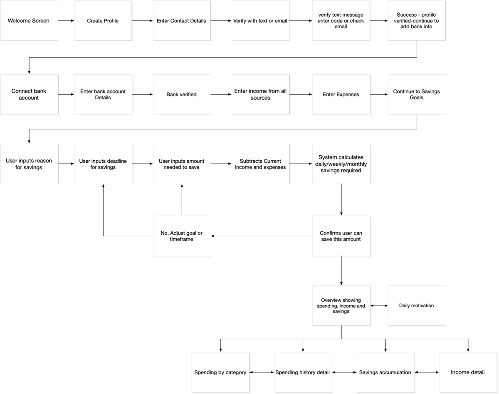

This project began with a competitive analysis, examining a plethora of savings applications including traditional banks, large and popular money-managing platforms such as Mint and Dobot, as well as many smaller savings apps available for mobile devices. Squirrel Away has been kept to one specific purpose: keep an eye on where the money is going in order to save for a particular goal.
Squirrel Away’s logo and mascot is the industrious rodent who always remains steadfast, busily preparing every day to ensure goals are met.
Our palette consists of a vibrant triad of gold, purple, and green, representing wealth, luxury, and money.

After taking the user through the onboarding process they are guided through linking a bank account, setting a goal, a deadline, and goal dollar amount. Once confirmed, the user can see an overview of their spending, income, and savings.
